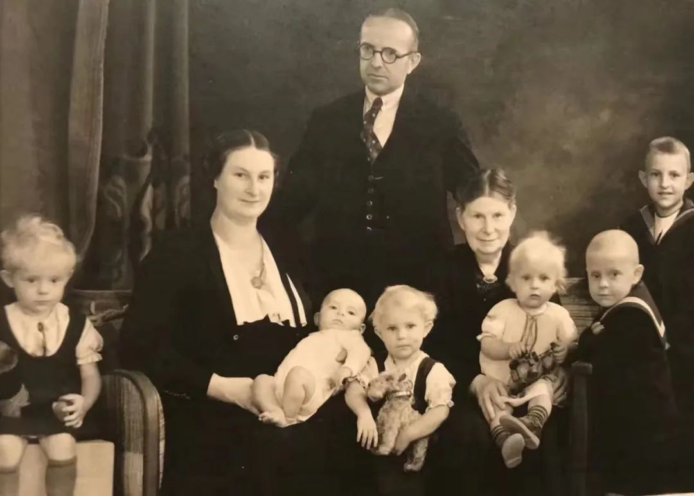

数说疫情0318：美国百万人恐失业，意大利万名医学生提前上岗
原文链接 备份链接 湖北现有疑似清零。多省发现回国人员中存在无症状感染者，“外防输入”形势仍然较为严峻。美国新增迅速逼近2000例。美、韩均计划直接向民众发放现金以度过困难时期 文 |《财经》数据研究员 徐进 图 |《财经》视觉中心 编 …
荷兰人平时看起来甚至有些淡然，不像南欧人那么热情浪漫。但到了需要帮助别人的时候， 一般都会尽力而为，不带附加条件。
文 | 王巧丽
正视新冠病毒的第一天
晚上7点钟， 荷兰人守在电视机前， 等着首相马克·吕特讲话。
1700万人口的国家，1413例感染 ，24例死亡。医疗物资紧张、谣言四起，一向以体质好、心大闻名的“橙色军团”也陷入困惑与担忧之中。
小姑玛丽安站在门外， 和我先生隔着一米说话， 讨论婆婆的病情。
婆婆今年88岁， 这几年身体状况不好，一直住在安养院。从上个月开始， 她开始发烧、病情加重， 意识模糊。小姑去看她， 婆婆已经认不出照料她最多、她最为之骄傲的大女儿。
小姑和先生的难题是：如果婆婆的状况在荷兰新冠肺炎疫情中进一步恶化，她还会得到必要的救助吗？安养院每次只让一名家人定时进去探望， 万一婆婆发生不测、家人正好不在怎么办？

少女时代的婆婆

汽车玻璃后面的婆婆，摄于半年前
3月16日，这个国家正视新冠病毒的第一天。从周一开始，学校关闭、餐馆和咖啡馆关停。政府建议人们减少出行，尽量呆在家里。在此之前，100人以上的聚会被叫停， 电影院关闭。我制片并导演的电影纪录片《乐僧》（罗文为联合导演），在荷兰最大的艺术院线卢米埃尔电影院排在了3月17号。就在上映前两天，政府决定关停所有超过百人聚会场所，这部片子因为被迫延期而参与了历史。

由于疫情，卢米埃尔电影院被迫延迟了《乐僧》的放映与原定17日晚的导演对话
“我没有容易接受的消息给大家。荷兰是一个开放国家。病毒浪潮一样奔涌，不会放过荷兰。” 马克·吕特说， 对三种可能出现的情形与政府的选择做了阐释。
第一种可能是最大限度控制病毒传播的同时，逐步建立群体免疫力。这种方式下，60%-70%的国民将感染，需要用几个月的时间。
第二种可能是听任病毒传播， 造成医疗系统过载， 老年人与其他高危人群将无法得到帮助。
第三种选择是拼命战胜病毒， 下死命令锁国。这听起来非常有吸引力，这样会导致国家陷于瘫痪， 数月乃至超过一年难以恢复。更多的公司将倒闭， 更多的人将失业。
有控制地、逐步建立群体免疫力，这是荷兰政府的选择。荷兰站在了德、法、英同一条战线，而没有像意大利和西班牙一样更激进。
作为一个有长期理性主义传统的国家，做出这样的选择一点没让人惊讶。把防御系统与战斗（疗救）系统分开，实际上是和欧洲长期的分级医疗思维一致的。

荷兰政府选择了严控与群体免疫相结合的方式，以避免医疗系统过载
全世界人民都知道，在荷兰， 如果你只是生病感冒， 根本去不了医院。轻症患者只能去看家庭医生，去了基本是白去， 大概率还是让你空手回家休息。医生对病情轻重的判断标准， 和我们常规的认知也不一样。
记得我生老大时， 分娩后当天下午就回家了。第二天出现了产后发烧，身体直打颤。先生焦虑万分给医院打电话。医院派了一名男医生和一名实习医生来到家里， 做了仔细的检查后， 建议我用冰块敷头， 让先生去商店给我买两支冰淇淋。我想哭又想笑， 这是多么原始的方法啊！
后来， 拗不过先生的坚持， 我忍痛吃了一只蛋筒冰淇淋，高温慢慢下降。用物理降温而不是药物降温， 经常是荷兰医生的第一选择。
按我的理解，中国与欧洲在对抗疫情的态度上，就像在球场上的不同打法。中国采取了对病毒进攻性的打法。欧洲则采用全面防守打法，尽管开局时有些蒙，并不代表不使劲踢。包括被中国报纸严辞批评的瑞典， 采取的也是“全面防守”（Total Defence）策略， 寄希望于低风险人群自愈， 为风险人群腾出资源和空间。
“假如末日明天到来， 今天我照样种自己的苹果树。” 2019年9月， 荷兰林堡省电视一台的记者为我制作专题纪录片时，问起对世界不确定性的看法， 我这么回答。这句已经忘记了出处的话， 一直是我的信念之一。
半年之间， 中美贸易战边谈边打，折腾了数年的英国终于脱欧，冠状病毒全球暴发， 美股一周熔断两次。一件件不确定事件发生，规模之大、频率之高， 让人难以看清我们所处的时代与自身处境的拼图。
从更长的时间轴上，作为一个旅居海外的前媒体人，17年前我经历了SARS， 和同事们并肩奋战，并在《新民周刊》做了《“SARS”呼唤透明行政》的封面报道。即使放到今天，那组报道仍然经得起检验。
17年后，作为一个纪录片与舞台节目导演， 我在荷兰马斯特里赫特响应政府“居家隔离”的政令，再次用自己的方式经历了这场从星星之火燎原的疫情。
关键时刻的社会互助
我的一个德国朋友， 这么写他邻居为“禁足”做的准备：
贝尓恩特78岁，家住德国北威州，一儿一女加上一个孙子。吃过早饭后，老人开始计划他防疫工作的第一步：如果我和我的老伴要隔离两周，我们绝对必需的吃穿住用都有哪些，哪些已有，哪些尚需采购，如要采购，什么店什么时间人最少，感染几率最小，什么店可以网购，大致需要多少时间。必备药品需多少，有多少接近过期，需要更新；离家最近的急诊室设备如何，如果不能接诊，下一个点在什么地方，驱车前往需要多少时间……
一切计划落实完毕之后，开始为女儿和女婿计划：女儿在柏林，公交密集，为降低感染几率，替代出行的方式都有哪些，哪些公司在柏林专事在线会议的举办，能否建议女儿所在公司实行远程办公，万一不行，谁能开假条……一切计划周密之后，开始考察儿子一家都需要什么，该做哪些应急预案，如何落实……贝尓恩特一边哼着小曲儿，抿着咖啡，一边把自己的部署写成一张张“必办清单”，上附联络人地址电话……正干得起劲，女婿来电话说口罩买不到了，贝尓恩特嘿嘿一笑“两周前我就下了单，今天下午到。我给你们发5个过去，先用着……”
这种强大的个人事务组织能力， 在德国和荷兰人中很常见。
婆婆身体还好的时候， 走到哪里都带着一个记事本，上面总写得密密麻麻的“购物清单”，“待办事项”“未办事项”等。她管理家庭像图书管理员管书一样条目细分， 我下一辈子也学不来， 索性就直接放弃了。
我们的邻居们很早就为街上的几十户人家建立了一个WHATSAPP大群。人群中谁家有危重病人、谁家有青壮年，都统计得一清二楚。谁可能最需要帮助， 谁在哪一天的哪个具体时刻能够提供帮助。我们家的邮箱里， 也收到了当地大学生塞进来、愿意提供无偿帮助的纸条。

疫情之前的小城马斯特里赫特， 我们生活的地方
荷兰人平时看起来甚至有些淡然，不像南欧人那么热情浪漫，但到了需要帮助别人的时候，一般都会尽力而为，不带附加条件。
有一次我伤了胳膊， 邻居知道后， 悄悄地把我家门前的草坪整理了。担心我饿瘦，其他荷兰同事也送汤、送自己做的蛋糕。
3月17日全天， 已经有数千人报名做医疗志愿者， 包括已经退休的医护人员和受过医护培训但在从事其他工作的人员、医学院学生等。
荷兰的幼儿园和学校，没有彻底关闭。如果一个家庭中有两人同时从事当下急需的工作，如医疗、物流等，学校仍然接收他们的孩子上学，并采取分组方法尽最大努力保证孩子健康。
回想两个月前， 我从北京飞回阿姆斯特丹。看着国内的消息， 每天都是难过、担心。“国家有难， 匹夫有责”， 作为一个不在现场的人， 开始时我被深深的无力感吞噬者。后来看到国内“一方有难八方支援”的壮举， 和无数个人的奉献与牺牲， 才有了很多信心：中国必胜。
有强大的个体组织能力与关键时刻社会互助，对于这个国家的抗疫，我同样不悲观。
提前安排的临终弥撒
看完首相的讲话，小姑玛丽安和我先生达成了一致意见：为婆婆尽快安排一场临终弥撒。
婆婆一生克勤克俭，经历了第二次世界大战，养育了五个孩子。从内战中贵族家的千金大小姐，变成了一个处处要留心家常用度、缝缝补补锅碗瓢盆的家庭妇女， 她为之骄傲，但也有不甘。

婆婆的少年（前排中间的小女孩）
八十岁的时候， 她还想把自己大学经济系的课程读完， 还想着学开车、看一看世界， 但这些都只能归于梦想。她很快开始健忘，生活逐渐不能自理。
她一生是虔诚的天主教徒。如果在牧师做临终弥撒之前病逝，对她和家人， 都难以接受。
疫情的发展，把安养院的老人们变成了易感人群。每次只能由一个人探视， 包括牧师。
这样， 当牧师用戴着手套的手握住她瘦弱的手， 用戴着口罩的口对她说“天主保佑， 你将在另外的世界因为善良与奉献得到赏赐”时， 没有一个家人能够在她身边。
也许她还能有想说而无力说出的话， 也许她想看每一个人， 传达这最后的爱意与不舍。
但在2020年3月，因为新冠肺炎疫情， 一切都不一样了……
王巧丽 :
新盐传媒创始人，纪录电影与舞台导演。现旅居荷兰， 曾任《新民周刊》时政记者。音乐记录电影《乐僧》被选入荷、德、美等多国电影节


· 欧洲27国无一幸免，张文宏：后续发展不容乐观，跨年度疫情风险越来越大
· 我在海外 | 看到英国政府发布“群体免疫”政策，我开始慌了
[](http://mp.weixin.qq.com/s?__biz=MTUzMDQzNjMwMQ==&mid=2652827150&idx=1&sn=a8357dee9a93c2102380663744b7690f&chksm=68ed23ac5f9aaaba62f3bf6eb78810ea68e53355e579d0279c53b2d0f11780807914d46282b2&scene=21#wechat_redirect)[· 新民一周 | 改变世界的一周](http://mp.weixin.qq.com/s?__biz=MTUzMDQzNjMwMQ==&mid=2652827348&idx=1&sn=3818e9e63a6723cd19856712b6360d2e&chksm=68ed23765f9aaa60709b2e48f3e151646f917d273d93ac45ed14b32bfb92eb469afdf09138fa&scene=21#wechat_redirect)
新民周刊所有平台稿件， 未经正式授权
一律不得转载、出版、改编或进行
与新民周刊版权相关的其他行为，违者必究


原文链接 备份链接 湖北现有疑似清零。多省发现回国人员中存在无症状感染者，“外防输入”形势仍然较为严峻。美国新增迅速逼近2000例。美、韩均计划直接向民众发放现金以度过困难时期 文 |《财经》数据研究员 徐进 图 |《财经》视觉中心 编 …
原文链接 备份链接 从股市的表现来看，市场更倾向于认同用短期的不便和经济痛苦来换取对病毒的控制 文 |《财经》特派记者 金焱 发自华盛顿 编辑 | 苏琦 新冠肺炎疫情持续肆虐，美国和欧洲为应对疫情影响经济，纷纷出台各种刺激救助政策，试图 …
原文链接 备份链接 “相关国家要抓住疫情防控‘窗口期’”——这句话，世界卫生组织总干事谭德塞说了很多次，最早的警告，是在中国新冠肺炎疫情还十分严重的2月初。然而，他发出的警告，似乎并未让更多国家采取必要的行动。 2月4日，谭德塞在日内瓦 …
原文链接 备份链接 “外防输入”已是当前疫情防控重中之重。海外累计确诊病例超过10万，世卫组织呼吁各国扩大监测范围。欧洲更多国家关闭边境 文 |《财经》数据研究员 徐进 图 |《财经》视觉中心 编辑 |** 郝洲** 一、北京重启小汤山 …
原文链接 备份链接 经常是下午两点，护士长出去告诉挂号者，医生还没吃午饭。满满一房间的患者竟立刻安静下来，急忙为我让了一条“路”出来。 文 | 侯蔚琳 春节前，我们发热门诊突然转来一位新冠肺炎疑似者。我套上防护服，进入层流病房采集患者生命 …